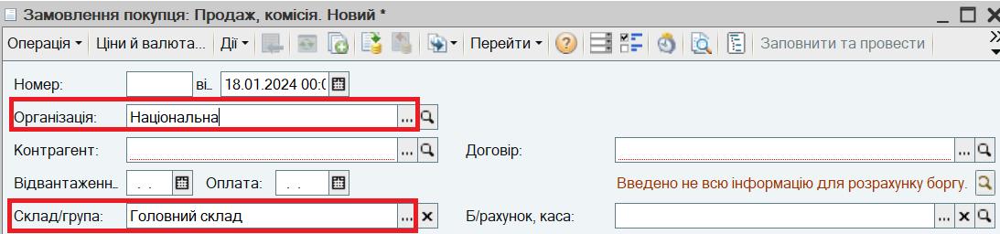
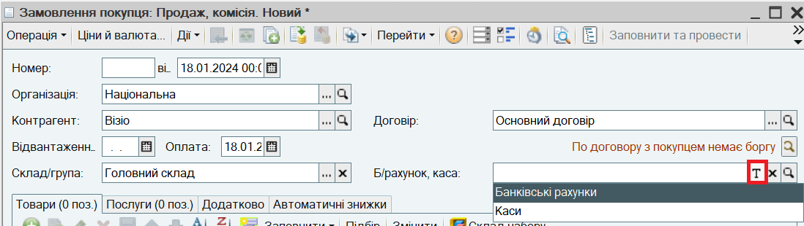
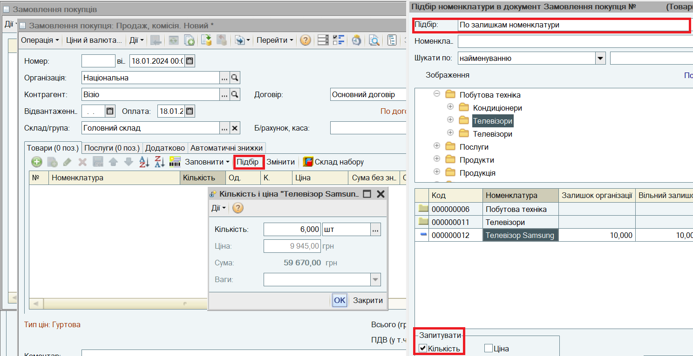
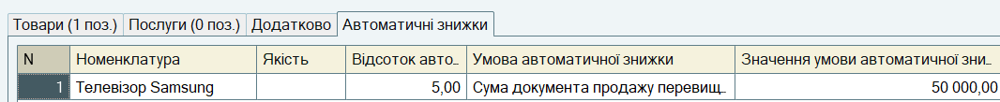
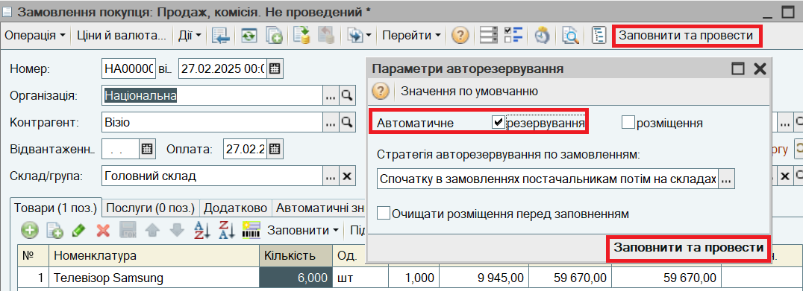
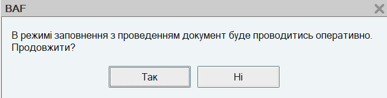
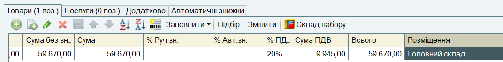
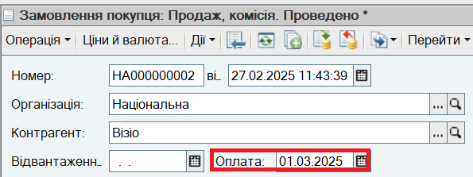
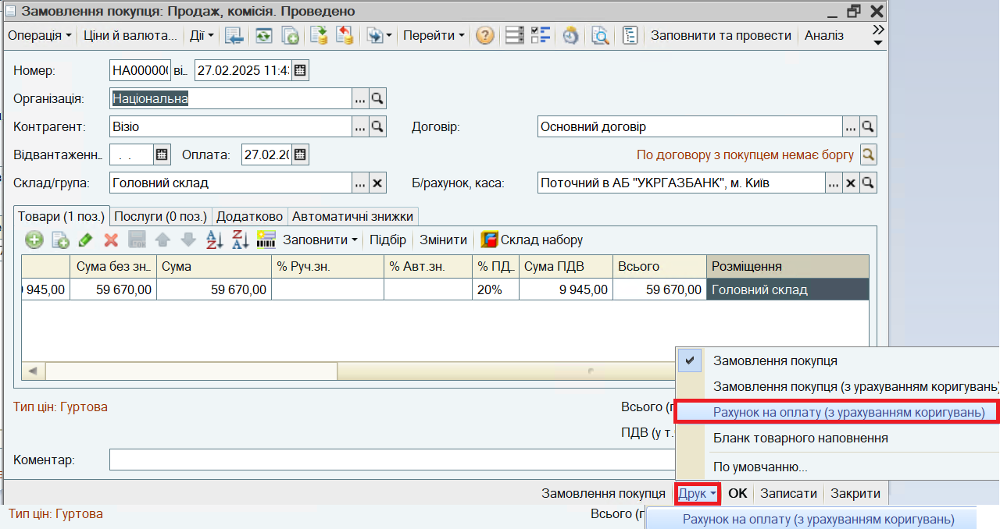
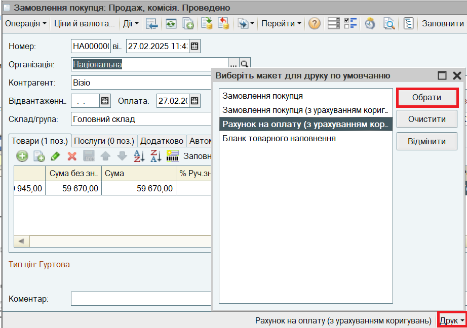

. Вибір контрагента також можливий шляхом набору перших літер Найменування або цифр Коду за ЄДРПОУ. Автоматично зазначаються основний Договір покупця і Тип цін, призначений в договорі.
. Вибір контрагента також можливий шляхом набору перших літер Найменування або цифр Коду за ЄДРПОУ. Автоматично зазначаються основний Договір покупця і Тип цін, призначений в договорі. Для фіксації попередніх умов продажу і виставлення рахунка покупцю використовується документ Замовлення покупця.
ПРИМІТКА.
Для виставлення рахунка на оплату можна також використовувати документ Рахунок на оплату покупцю. Рахунок на оплату покупцю оформляється тільки у випадку, якщо товари будуть відвантажуватися з поточного залишку на складах без попереднього резервування і без оперативного контроля оплати за рахунком. Процес оформлення документа Рахунок на оплату покупцю аналогічний процесу оформлення документа Замовлення покупця.
1. Відкрийте список документів Замовлення покупця. Для цього в меню Документи виберіть пункт Продаж, підпункт Замовлення покупців. Створіть новий документ Замовлення покупця:

Організація і Склад заповнюються автоматично з настройок користувача за замовчуванням і при необхідності змінюються вручну.
2. Зазначте Контрагента "Візіо" за кнопкою . Вибір контрагента також можливий шляхом набору перших літер Найменування або цифр Коду за ЄДРПОУ. Автоматично зазначаються основний Договір покупця і Тип цін, призначений в договорі.
3. Для зазначення банківського рахунку, на який покупець має перевести грошові кошти, натисніть на кнопку  реквізиту Б/рахунок, каса. Виберіть варіант Банківський рахунок, відкриється список банківських рахунків організації. Виберіть банківський рахунок.
реквізиту Б/рахунок, каса. Виберіть варіант Банківський рахунок, відкриється список банківських рахунків організації. Виберіть банківський рахунок.

4. Для швидкого підбору товарів в документ використовуйте кнопку Підбір. В діалоговому вікні підбору встановіть режим По залишкам номенклатури, щоб бачити тільки товари, наявні на складі. Встановіть запит Кількості. При підборі використовуйте швидкий пошук номенклатури.

ПРИМІТКА. При підборі для товару "Телевізор Samsung" встановлено автоматичну знижку 5%, оскільки загальна сума документу перевищила встановлений поріг 50000 грн. Інформація про причину надання автоматичної знижки відображається на закладці Автоматичні знижки.

5. Зарезервуйте товари під замовлення з поточних залишків на складі. Для цього натисніть на кнопку Заповнити та провести. В діалоговому вікні, що відкрилося, встановіть прапор Автоматичне резервування і натисніть на кнопку Заповнити та провести.

Буде видано попередження:

Виберіть відповідь Так. Документ буде проведено, товар зарезервовано. Склад, на якому зарезервовано товар, зазначено в колонці Розміщення:

6. Зазначте очікувану Дату оплати.

7. Для отримання друкованої форми рахунка на оплату натисніть на кнопку Друк в нижній частині документа и виберіть друковану форму Рахунок на оплату (з урахуванням коригувань) .

Цю форму можна призначити друкованою формою по умовчанню. Для цього потрібно натиснути кнопку Друк - По умовчанню. і у списку, що відкриється, вибрати форму по умовчання.

Тепер форму можна роздрукувати за кнопкою Рахунок на оплату (з урахуванням коригувань) в формі рахунка, не відкриваючи діалог друку.

Друковану форму можна надіслати електронною поштою за кнопкою .
Наступний розділ: "Надходження оплати покупця на банківський рахунок"